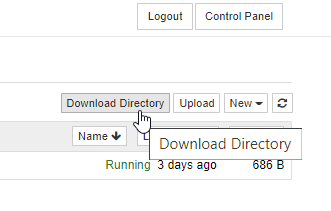

A core tenet of 2i2c is the Right to Replicate.
This means that we want it to be as easy as possible for our users to deploy their own infrastructure that replicates a 2i2c JupyterHub, without requiring 2i2c to be involved.
This page is a short guide on how you can migrate off of a 2i2c JupyterHub, either to work locally or to deploy your own JupyterHub.
You might want to download your entire home directory for many
reasons - to get data off a hub that is closing, to migrate to
a different service, for archival purposes, etc. Your home directory
will contain all your data and your notebooks.
Hubs managed by 2i2c make this easy.
Open the classic Jupyter Notebook file browser. If you are
using another interface, navigate to the classic interface by changing your
URL path to /tree. e.g.,
<your-hub>.pilot.2i2c.cloud/user/<your-username>/tree
Click on DownloadDirectory.

This will zip up the contents of your user file system and download them to your machine.
Note
If your hub is using a custom user environment, it needs the
jupyter-tree-download package
installed to make this feature available. As it is a Jupyter Notebook extension, you
must install this in your image - manually installing with !pip inside your notebook
will not work.
2i2c JupyterHubs are built entirely with open source tools that are community-led.
We prioritize tools with diverse, multi-stakeholder communities, which maximizes the chances that the tools will continue to be broadly useful for a long time to come.
This section describes how you could replicate your own JupyterHub that closely follows the setup used by 2i2c.
2i2c JupyterHubs use the official JupyterHub Helm Chart for their configuration and deployment.
They run on an open-source platform called Kubernetes, which allows you to deploy infrastructure on a variety of cloud providers.
We use a tool called Helm to manage your Kubernetes cluster in order to provide the JupyterHub service that makes up a 2i2c JupyterHub.
There are many skills needed in operating cloud services.
We’ll cover a few key pieces below (note that they may be provided by either a single person, or multiple people).
We’ll refer to the group of people that run your cloud infrastructure the Site Reliability Team.
Dev/Ops Familiarity
: The most important is a familiarity with dev-ops workflows (also often called Site Reliability Engineering).
This is a set of practices and a mentality that is designed for running agile, cloud-based applications with minimal unnecessary overhead.
You should have somebody that is generally familiar with cloud infrastructure, and able dig through documentation and understand how it relates to a variety of provider-specific APIs.
This may be a local system administrator (sys-admin), though note that the practice of systems administration is often very different from running dev-ops workflows and cloud services, both technically-speaking and in terms of process and mentality.
Development in Python (and maybe JavaScript)
: Many of the infrastructure pieces in the Jupyter stack use Python as their implementation language.
This includes tools like JupyterHub, Jupyter Lab / Notebooks, etc.
Modifications to your configuration and deployments often require coding in Python, so you should be comfortable programming in this language.
In addition, some changes to your hub might require JavaScript expertise as well - especially if you wish to change or customize any user interface elements.
Software Development in the language your users use
: In addition to generic cloud infrastructure experience, it is also important to have somebody with development skills that are familiar to your users.
Running a service requires understanding the perspective of your users, and helping guide them in utilizing the infrastructure to its maximum potential.
You should have somebody that understands the kinds of problems your users are solving, and can help them debug and improve their work.
Communications skills and processes to facilitate this
: Finally, it is crucial that everybody on a cloud service have excellent and open communication skills.
Running cloud services requires a lot of coordination both in development and operations, and minimizing the work this takes requires having effective processes in operating as a distributed team.
Tip
A great place to pick up these skills is to engage with other communities that deploy applications in the cloud.
Look up Site Reliability Engineer and Dev/Ops communities, and engage with them.
You can also find others deploying Jupyter infrastructure via the Jupyter Community Forum.
Finally, there are an increasing number of communities in higher education that can provide expertise and advice - search your local community to find others that are trying to solve the same problems.
What work is involved in operating a 2i2c JupyterHub?#
There are three main steps to operating any cloud infrastructure:
Initial deployment
Ongoing operation and debugging
Enhancements and customizations
This guide will primarily cover the first step - how to deploy a cloud service using Zero to JupyterHub that replicates the 2i2c JupyterHub service.
However, note that operating and debugging cloud infrastructure, as well as customizing and upgrading it, take significant expertise and time.
Below we’ll cover how you can deploy your own JupyterHub using your 2i2c JupyterHub configuration as a start.
2i2c JupyterHubs use the Zero to JupyterHub guide for their configuration and deployments.
We recommend familiarizing yourself with it, as it will be invaluable in helping you navigate how to run a JupyterHub that replicates the 2i2c JupyterHub service.
All of the configuration for a 2i2c JupyterHub exists at the infrastructure/ repository. This is a “meta” repository that centralizes configuration and deployment of many 2i2c JupyterHubs.
There are two main things you’ll need from this repository to deploy your hub:
Each yaml file is a Kubernetes cluster with a collection of hubs on it. The 2i2c.cluster.yaml configuration contains most 2i2c hubs that do not have their own dedicated cluster.
These files have an entry for each hub, which contains a Zero to JupyterHub configuration for your hub. You should find this configuration under config/jupyterhub:.
Your helm chart template. In addition to your hub-specific configuration, your hub also has a “template configuration” that defines the basic setup of your hub infrastructure.
Each template has a name (e.g., dask-hub) and maps onto a Helm configuration.
You can find each template in this folder.
Look for the values.yaml file, as this contains the actual template configuration that you’ll use with your Zero to JupyterHub configuration.
You should merge these two configuration files into a single one, for use later.
Make sure to avoid duplicating any keys, if you have duplicate keys, update one with the values of the other.
When you are asked to create a values.yaml file (your Helm Chart configuration), start with the basic configuration recommended in the guide.
At the end of this step you should have a basic JupyterHub running on Kubernetes.
Enhance your JupyterHub to use your 2i2c JupyterHub configuration#
Now that you have your own JupyterHub running on Kubernetes, it’s time to customize it using your 2i2c JupyterHub configuration.
Paste in the configuration that you copied above into your JupyterHub’s values.yaml file. Make sure to avoid duplicating any keys, if you have duplicate keys, update one with the values of the other.
At the end of this step, you should have a JupyterHub running on Kubernetes that contains the configuration used to deploy your 2i2c JupyterHub.